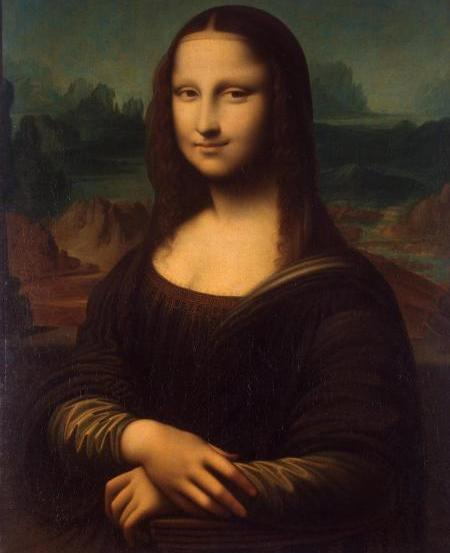

Леонардо да Вінчі «Мона Ліза (Джоконда)», 1506
Повна назва картини – Портрет пані Лізи дель Джокондо. З італійської «ma donna» перекладається як «моя пані». В скроченому варіанті цей вираз перетворився в monna або mona. На полотно нанесені три версії картини, написані в різний час. Мабуть, художник намагався довести свій твір до досконалості. Експерти стверджують, що попередні версії набагато світліше і яскравіше сучасної. Зараз картина виставляється в окремій кімнаті, яка коштувала музею сім мільйонів доларів. Для неї створений спеціальний мікроклімат, щоб запобігти негативному впливу зовнішнього середовища. Джоконда захищена куленепробивним склом. Лувр застрахував творіння Да Вінчі на три мільярди доларів.